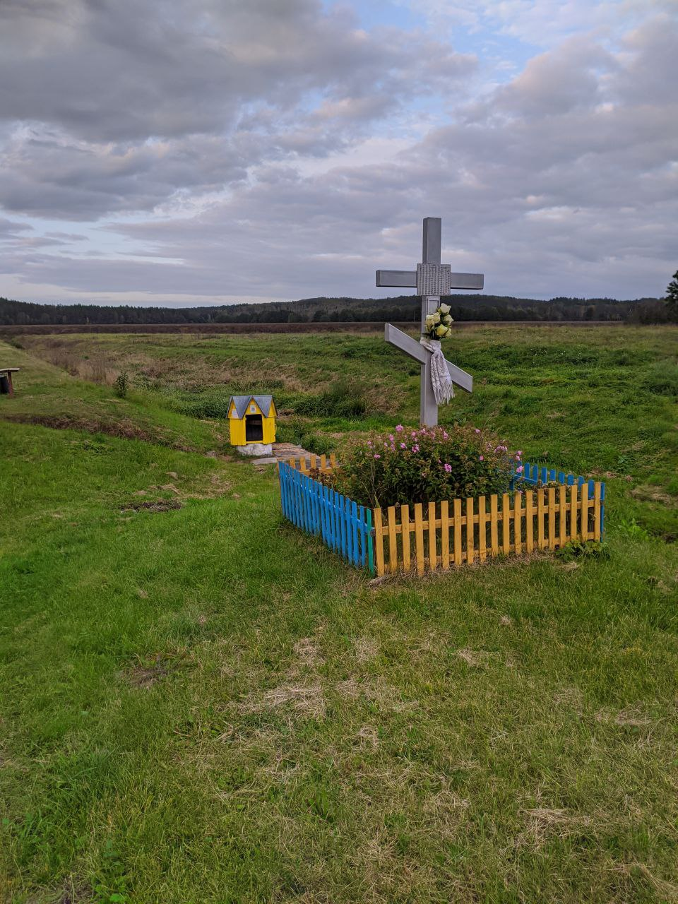
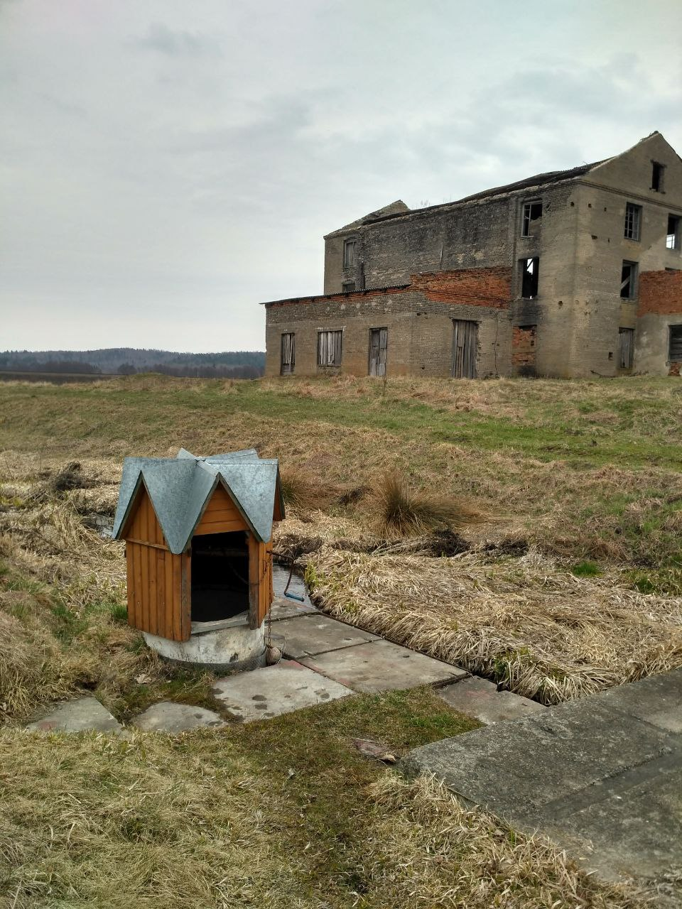
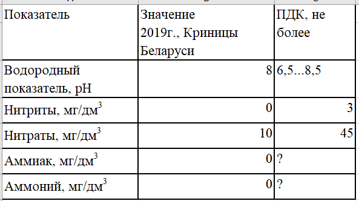
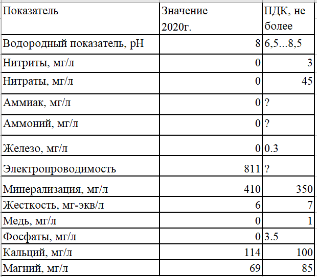
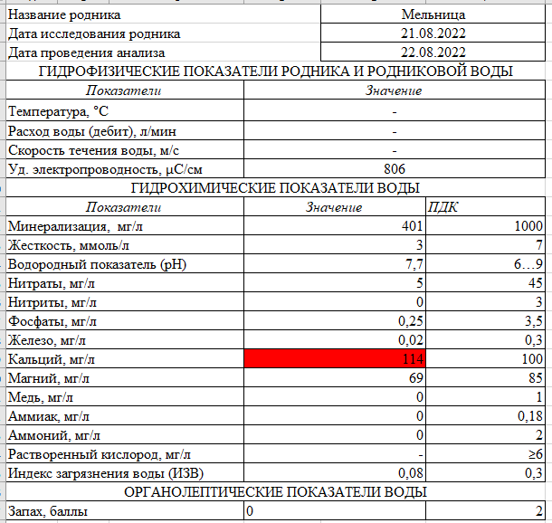
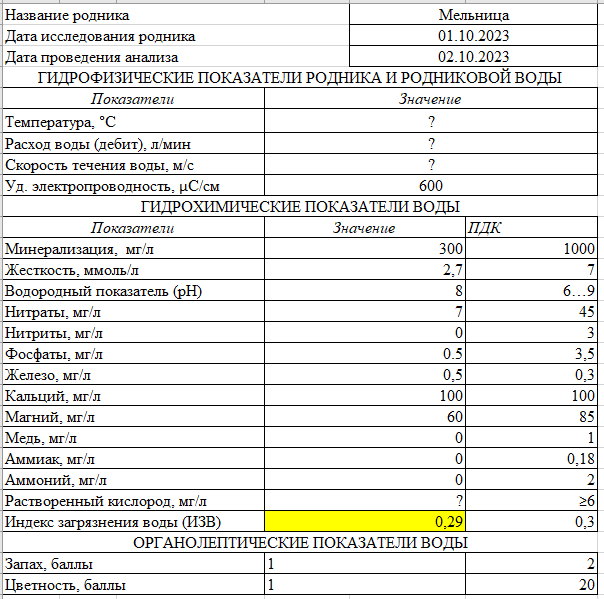

Мельница
03.07.2017
Брестская область > Барановичский район > д. Молчадь > Мельница


Родник находится в спрямленном ручье Мурованка, начинающемся от родника Мурованка-1. Оборудован как колодец. Название родника происходило от распологавшейся рядом мельницы, построенной Валицкими, которая, однако, была снесена в 2023 году.
Анализ воды
В роднике наблюдается периодическое повышение уровня нитратов. Не рекомендуется к употреблению.
Анализ воды от 04.2019

Анализ воды от 07.2020



Местоположение
Координаты: 53.31507, 25.705897